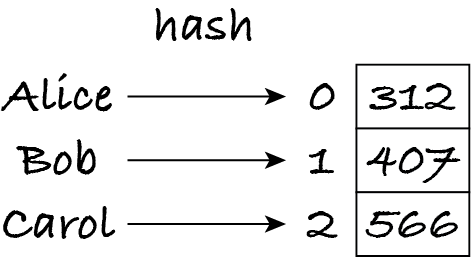
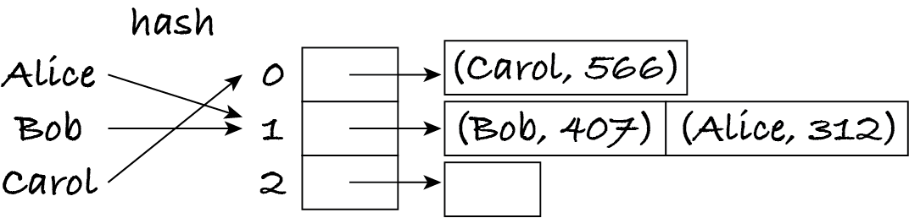
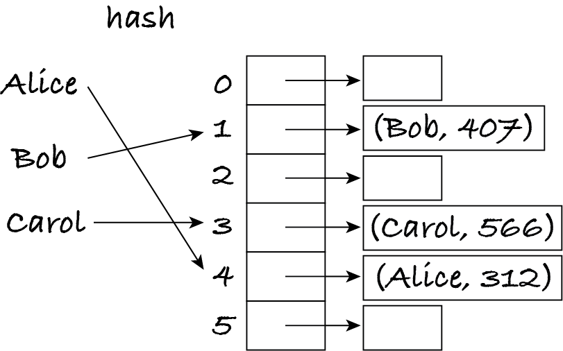

8.3. Hash tables
Maps can be implemented with lookup tables if the keys are known in advance, so that we can write a bespoke hash function that computes the index for each key. Different keys must be translated to different indices because each position of the lookup table only has one value of the map.
In a bilingual dictionary, any string can be a key (word of the language). When there’s a potential infinite number of keys, it’s impossible to guarantee that each associated value ends up in a different position of a finite table. A simple modification of the lookup table can handle this: we allow multiple key–value pairs per index.
8.3.1. With separate chaining
Consider a map of strings (names of employees) to integers (their phone extensions). If we know the employees’ names, we can create a lookup table with as many entries as employees and a hash function that returns a distinct index for each employee. Adding, removing and replacing extensions involves obtaining the index and then putting, removing or replacing the integer at that position. Here’s a small diagram for three employees Alice, Bob and Carol, for which the hash function returns 0, 1 and 2, respectively.
If instead the hash function has to return an index for any string, it may happen that for these particular strings the function returns 1 for ‘Alice’ and ‘Bob’ and 0 for ‘Carol’. The lookup table then contains a sequence of employee-extension pairs at each position, with the empty sequence at index 2.
A hash table with separate chaining is a lookup table with a sequence of key–value pairs at each position of the table. Each sequence is called a slot of the hash table.
Info: Many authors use the term ‘bucket’ instead of ‘slot’.
Here’s the same hash table using Python lists.
[1]:
[ # lookup table
[('Carol', 599)], # first slot
[('Bob', 407), ('Alice', 312)], # second slot
[] # third slot
]
[1]:
[[('Carol', 599)], [('Bob', 407), ('Alice', 312)], []]
Each map operation involves obtaining the index for the given key and then doing a linear search for that key in the slot at that index. If the key is in the map, it must be in that slot: no other slot has to be searched.
Exercise 8.3.1
The keys are used by the hash function to know which slot a value is in. Why do hash tables store the keys and not just the values?
Ideally, we want each slot to be very short so that the linear search of a slot effectively takes constant time. If the table has length 1, there’s a single slot with all key–value pairs. If the table has length 2, then each slot has half the pairs, assuming the hash function distributes them equally among the slots. If the table has length 3, each slot has (hopefully) one-third of the pairs, and so on. The longer the table, the shorter each slot is likely to be. The ratio between the number of pairs (size of the map) and the number of slots (size of the table) is the load factor of the hash table. The load factor is the average (mean) length of the slots. The example above has load factor 3 / 3 = 1: three items for three slots. The mean length of each slot is 1. If there are 2 pairs and 4 slots, then the load factor and mean slot length are 0.5.
The lower the load factor, the higher the likelihood that each slot has at most one pair, which is ideal for performance. Unfortunately, the lower the load factor, the more empty slots the table has, which wastes memory. For example, a load factor of 0.1 means that 9 of 10 slots are empty, if the pairs are uniformly distributed. Space–time tradeoffs pop up everywhere in algorithms and data structures.
One way to get acceptable performance and memory usage is to use a dynamic array for the table and implement a growth-and-shrink policy that keeps the load factor within a desired range. For example, to keep the load factor between 0.5 and 1, we double the table length when adding a pair would make the load go over 1, and reduce the length when removing a pair would make the load drop below 0.5. Whenever the number of slots changes, the indices are recomputed for all keys to redistribute the pairs among the new (more or fewer) slots.
Info: Hash tables with open addressing use less memory than separate chaining because they have at most one key–value pair per position of the lookup table. However, the algorithms to implement the map operations are more complicated. M269 doesn’t cover this variant of hash tables.
Info: Some texts use ‘dictionary’ as a synonym for ‘hash table’. In M269, a hash table is a data structure and dictionary is a Python data type.
8.3.2. Hash functions
If a hash function is to return an index for each key, it must know the length of the table. What happens in practice is that hash functions are generic, independent of the table size, and return a potentially very large integer h for the key. The map operations then transform h into a valid index. The easiest way is to use the modulo operation to obtain the remainder of h divided by the table length L. This results in an integer from 0 to L − 1.
Consider the earlier example and assume that h is 4 for ‘Alice’, 7 for ‘Bob’ and 3 and for ‘Carol’. With L = 3 we obtain the key-to-index assignment as shown earlier: ‘Alice’ and ‘Bob’ are put in slot 4 mod 3 = 7 mod 3 = 1 and ‘Carol’ in slot 3 mod 3 = 0. If the table is resized to L = 6, then ‘Alice’ and ‘Carol’ are expected to be in slots 4 and 3 respectively (their hash value h doesn’t change) and thus have to be put there.
When resizing a hash table we can’t copy the slots wholesale to the same indices in the new static array, as we do for normal dynamic arrays: subsequent searches for keys would search the wrong slots and not find the keys! Therefore, when resizing a hash table, all indices have to be recomputed. This is not only useful to better redistribute the pairs when the table grows: it’s essential for the map operations to work correctly.
Writing a hash function for a particular key type is dead easy. Here’s one for strings:
def hash_string(string: str) -> int:
return 0
It’s a rubbish function of course. It will put all keys in the first position of the table and all map operations will take linear time in the size of the map.
Here’s a slightly less worse hash function.
def hash_string(string: str) -> int:
return len(string)
This one puts all strings of the same length in the same slot. In most applications, the length of strings doesn’t vary much. For example, if strings are English (or even German) words in common usage, then a hash table using this function would only have its first ~20 slots occupied.
This hash function is much better:
[2]:
def hash_string(string: str) -> int:
"""Return a hash number for the string."""
product = 1
for character in string:
product = product * ord(character)
return product
The function takes each character into account. Strings that differ by a single character have different hash values.
[3]:
hash_string("algorithm")
[3]:
1885244446448213760
[4]:
hash_string("algorythm")
[4]:
2172519790668893952
But strings that are permutations of each other have the same hash value.
[5]:
hash_string("logarithm") # same as for 'algorithm'
[5]:
1885244446448213760
This will lead to a collision: the different keys will be put in the same slot.
The last function takes linear time in the length of the string. For short strings, this is equivalent to constant time, but if strings can have thousands of characters, e.g. they are whole documents, then a more efficient function may be needed.
Writing hash functions is easy; writing efficient hash functions that reduce collisions is hard. Hashing algorithms are quite mathematical and not covered in M269, but as always there’s plenty of information online if you’re curious.
Python has implemented hash functions for numbers, Booleans, strings and tuples. They can all be called via the generic hash function.
[6]:
hash("algorithm")
[6]:
-4858703937316695362
[7]:
hash("logarithm")
[7]:
-7962428355740776657
For security reasons, the hash values for strings are different between interpreter sessions. If you run the two cells above, you will get values different from mine; if you restart your notebook kernel and run the cells, you will get further different values.
8.3.3. Unhashable values
You may be wondering: if Python provides a hash function for tuples, why doesn’t it provide one for lists?
[8]:
hash((1, 2, 3))
[8]:
529344067295497451
[9]:
hash([1, 2, 3])
---------------------------------------------------------------------------
TypeError Traceback (most recent call last)
Cell In[9], line 1
----> 1 hash([1, 2, 3])
TypeError: unhashable type: 'list'
Imagine I could use lists as keys, like this:
occupant = dict()
office = ['Main building', 4] # building and office number
occupant[office] = 'Alice'
Lists are mutable, so I can change the name of the building: office[0] = 'Headquarters'. If I now try to obtain the occupant with the lookup operation (occupant[office]), what will happen?
The interpreter will compute the hash value of the office but since the office name changed, the hash value will almost certainly be different. The lookup operation will search for the office in the wrong slot, not find the key and raise an error.
If I try to look up the old key, the correct slot will be searched but since the key has changed, the linear search won’t find a match and raise an error again.
In summary, if a key is modified after it was inserted in the hash table, then neither the old nor the new key can be found again, because the new key is in the slot computed for the old key. To avoid this problem, Python doesn’t provide hash functions for lists and dictionaries, because they can be changed.
Some other languages do allow mutable values to be used as map keys. One way to achieve that is to put in the map a copy of the key, not a reference to the key object as Python does, so that any change to the key after the insertion does not affect the copy that is already in the map.
Info: Hash functions are also used in cryptography and to check if a file has been tampered with. Hash functions for encrypting or ‘fingerprinting’ files have different requirements than those for hash tables.
8.3.4. Complexity
Looking up, adding, removing or replacing a value in a map can take a while if any (or all!) of this happens:
the hash function takes linear time in the size of a key and keys are large
the hash function leads to many collisions
the actual keys used in the application are somehow ‘skewed’ and lead to many collisions
the resize policy is poor and leads to frequent reconstruction of the table.
Even if a hashing algorithm is linear in the size of the key, for the purposes of M269 we assume that keys have a small bounded length and thus we consider hashing to take constant time.
In the worst case, all keys end up in the same slot and every map operation takes linear time in the size of the map. In the best case, each slot has a small bounded number of key–value pairs and each map operation takes constant time.
We assume that the resize policy leads to constant time for each map operation.
To sum up, for most applications of maps, keys are short and general resize policies and hashing algorithms are good enough to obtain map operations with constant time. That’s why hash tables are a widely used ‘workhorse’ data structure, including for implementing Python’s dictionaries.
Info: Java’s class java.util.HashMap also implements maps using hash tables.
Like for sequences, the complexity of the equality operation is constant in the best case (when the maps have different sizes) and linear in the size of either map in the worst case, because the maps have to be compared one pair at a time.
8.3.5. Implementation
Here’s a partial implementation of a map, using a hash table with separate chaining.
[10]:
class HashMap:
"""An unordered collection of key-value pairs.
Keys must be unique and hashable.
"""
# The hash table is a dynamic array of slots.
# Each slot is a dynamic array of key-value pairs.
def __init__(self) -> None:
"""Create an empty map."""
self.slots = [[]] # start with 1 slot
self.size = 0
def has(self, key: object) -> bool:
"""Return True if and only if key is in the map.
Preconditions: key is hashable
"""
index = hash(key) % len(self.slots)
slot = self.slots[index]
# linear search of the key in the only slot it can be
for pair in slot:
if pair[0] == key:
return True
return False
def grow(self) -> None:
"""Grow the dictionary if necessary.
Postconditions:
if pre-self has load factor 1, post-self has load factor 0.5
"""
capacity = len(self.slots)
if self.size == capacity:
# new hash table with double the slots, all empty
new_capacity = capacity * 2
new_slots = []
for each_slot in range(new_capacity): # noqa: B007
new_slots.append([])
# put each pair in the correct slot in the new table
for slot in self.slots:
for pair in slot:
index = hash(pair[0]) % new_capacity
new_slots[index].append(pair)
# use the new hash table
self.slots = new_slots
def associate(self, key: object, value: object) -> None:
"""Associate value to key in the map.
Preconditions: key is hashable
Postconditions: looking up key in self returns value
"""
self.grow()
index = hash(key) % len(self.slots)
slot = self.slots[index]
for pair in slot:
if pair[0] == key:
pair[1] = value
return
slot.append([key, value])
self.size = self.size + 1
Let’s have a peek at how the hash table changes as new pairs are added. The following constructs a hash table of Unicode codes to characters.
[11]:
characters = HashMap()
for letter in "algorithm":
characters.associate(ord(letter), letter)
print(characters.slots)
for letter in "moralgith": # test membership operation
if not characters.has(ord(letter)):
print("error: missing", letter)
[[[97, 'a']]]
[[[108, 'l']], [[97, 'a']]]
[[[108, 'l']], [[97, 'a']], [], [[103, 'g']]]
[[[108, 'l']], [[97, 'a']], [], [[103, 'g'], [111, 'o']]]
[[], [[97, 'a']], [[114, 'r']], [], [[108, 'l']], [], [], [[103, 'g'], [111, 'o']]]
[[], [[97, 'a'], [105, 'i']], [[114, 'r']], [], [[108, 'l']], [], [], [[103, 'g'], [111, 'o']]]
[[], [[97, 'a'], [105, 'i']], [[114, 'r']], [], [[108, 'l'], [116, 't']], [], [], [[103, 'g'], [111, 'o']]]
[[[104, 'h']], [[97, 'a'], [105, 'i']], [[114, 'r']], [], [[108, 'l'], [116, 't']], [], [], [[103, 'g'], [111, 'o']]]
[[], [[97, 'a']], [[114, 'r']], [], [[116, 't']], [], [], [[103, 'g']], [[104, 'h']], [[105, 'i']], [], [], [[108, 'l']], [[109, 'm']], [], [[111, 'o']]]
Note how pairs move around as the table grows. For example, ‘l’ and its code move across slots 0, 4 and 12. Pairs that are in the same slot for a while, like ‘g’ and ‘o’, end up in separate slots when the table gets larger.
Exercise 8.3.2
Some Python interpreters also store the hash value of each key in the table, i.e. each slot has hash–key–value triples rather than key–value pairs. Can you think why?
Exercise 8.3.3
Suppose I didn’t implement the method to grow the hash table and instead initialised the table with one thousand slots. Would this map implementation still work if the load factor goes above 1?